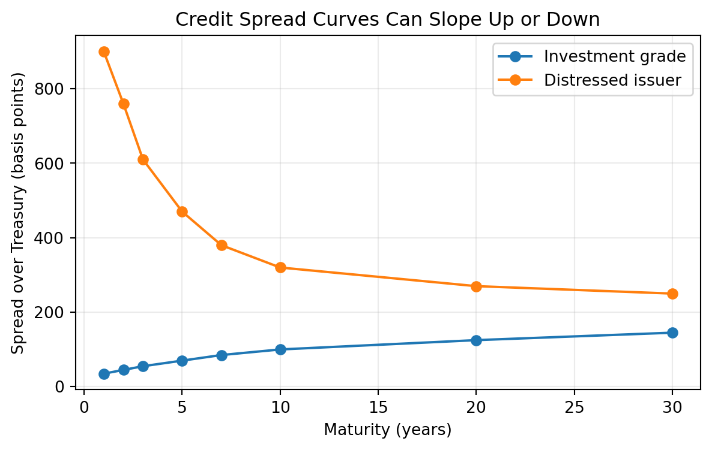
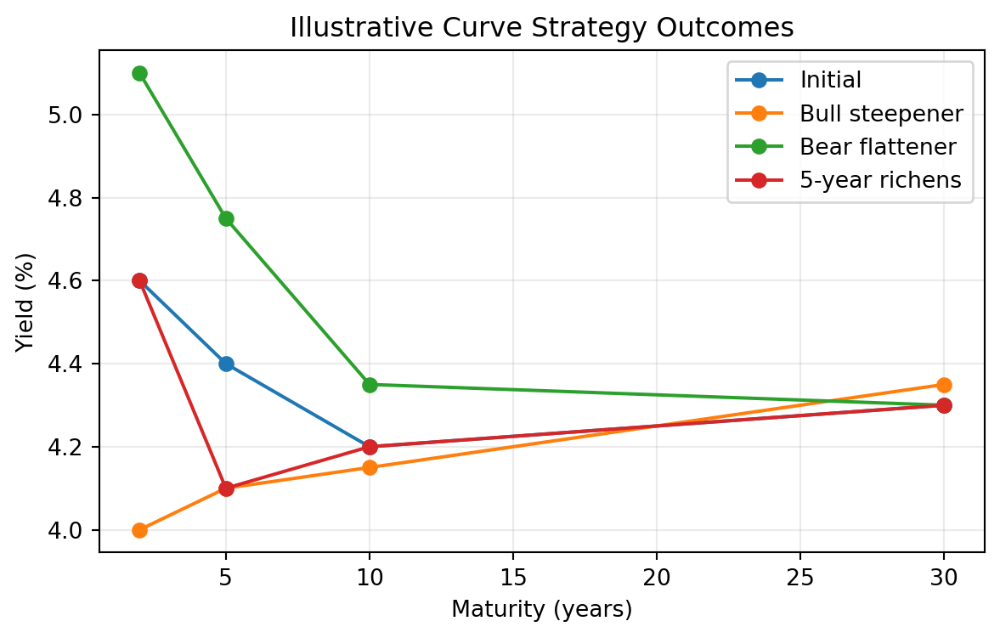

Lecture 4: Benchmark Spreads and the Term Structure of Interest Rates
Learning Objectives
By the end of this lecture you should be able to:
- Explain why a bond’s required yield can be decomposed into a base interest rate and a benchmark spread.
- Identify the main issuer, credit, tax, liquidity, financeability, option, and maturity characteristics that affect benchmark spreads.
- Distinguish between a yield curve and a theoretical spot rate curve.
- Explain why coupon bond yields are not the correct discount rates for valuing individual cash flows.
- Construct a simple Treasury spot rate curve by bootstrapping from Treasury bill and coupon security prices.
- Use spot rates to value a bond and to measure its spread over the Treasury curve.
- Derive forward rates from spot rates and interpret forward rates as hedgeable break-even rates.
- Compare the pure expectations, liquidity, preferred habitat, and market segmentation theories of the term structure.
- Explain why swap rates are widely used as benchmark rates in fixed income markets.
- Design curve strategies based on the shape of the yield curve and a trader’s view about future curve movements.
1 Base Interest Rate
The base interest rate is the benchmark rate used as the starting point for valuing a bond. It is meant to represent the return required on a security with minimal default risk over the same maturity or cash-flow horizon.
In U.S. dollar fixed income markets, the base rate is often taken from:
- U.S. Treasury rates,
- the Treasury spot rate curve,
- the swap rate curve, or
- overnight indexed swap rates for collateralized derivative valuation.
The base rate is not the full required yield on most bonds. A corporate bond, municipal bond, mortgage-backed security, or structured product usually requires compensation for additional risks and contractual features. The required yield can be summarized as:
\[ \text{Required yield} = \text{Base interest rate} + \text{Benchmark spread}. \]
This decomposition is useful because it separates broad market interest-rate risk from issuer-specific and security-specific risk.
NoteConceptual Example
Suppose the 5-year Treasury yield is 3.80% and a 5-year industrial corporate bond trades at a yield of 5.05%.
\[ \text{Benchmark spread} = 5.05\% - 3.80\% = 1.25\%. \]
The bond trades at a spread of 125 basis points over the 5-year Treasury benchmark.
2 Benchmark Spread
The benchmark spread is the yield difference between a bond and a benchmark security or benchmark curve. It compensates investors for risks and features not captured by the base interest rate.
For a simple bond quoted against a Treasury benchmark:
\[ \text{Benchmark spread} = y_{\text{bond}} - y_{\text{benchmark}}. \]
If the corporate bond yield is 6.20% and the Treasury benchmark yield is 4.70%, the benchmark spread is:
\[ 6.20\% - 4.70\% = 1.50\% = 150 \text{ basis points}. \]
The spread is not fixed. It changes as credit conditions, market liquidity, investor risk appetite, and the bond’s own characteristics change.
2.1 Types of Issuers
Different issuer types usually trade at different spreads because investors assign different risks and legal protections to each sector.
Common issuer categories include:
- sovereign governments,
- government agencies,
- supranational institutions,
- municipalities,
- financial corporations,
- industrial corporations,
- utilities,
- structured finance issuers,
- mortgage-backed security issuers.
Treasury securities usually define the lowest-yielding benchmark in the domestic currency because they are backed by the sovereign taxing authority and are highly liquid. Corporate bonds trade at positive spreads because investors require compensation for default risk, downgrade risk, and lower liquidity.
NoteIssuer Spread Example
Assume the 10-year Treasury yield is 4.00%. Three 10-year bonds trade at:
| Issuer type | Yield | Spread over Treasury |
|---|---|---|
| Federal agency | 4.35% | 35 bps |
| Utility company | 4.95% | 95 bps |
| High-yield industrial company | 7.25% | 325 bps |
The spread increases as investors require more compensation for credit and liquidity risk.
2.2 Perceived Creditworthiness of Issuer
Creditworthiness is the market’s assessment of the issuer’s ability and willingness to make promised payments. It depends on:
- leverage,
- earnings stability,
- cash-flow coverage,
- asset quality,
- business risk,
- industry cyclicality,
- legal protections for creditors,
- recovery value if default occurs.
Credit ratings summarize some of this information, but market spreads often react faster than ratings. A widening spread can signal that investors are demanding more compensation for default or downgrade risk.
NoteCredit Spread Example
A 7-year A-rated bond trades at 85 bps over Treasuries. A similar BBB-rated bond from the same sector trades at 145 bps. The 60 bps difference reflects the market’s higher required compensation for the weaker credit profile.
2.3 Inclusion of Options
Embedded options change a bond’s cash flows and therefore affect its spread.
A callable bond gives the issuer the right to redeem the bond before maturity. This is valuable to the issuer and costly to the investor. If interest rates fall, the issuer can call the bond and refinance at a lower rate, limiting the investor’s price upside.
A putable bond gives the investor the right to sell the bond back to the issuer at a specified price. This is valuable to the investor and costly to the issuer.
All else equal:
- callable bonds usually trade at higher yields than otherwise comparable noncallable bonds,
- putable bonds usually trade at lower yields than otherwise comparable nonputable bonds,
- convertible bonds may trade at lower yields because the conversion option has value.
NoteCallable Bond Example
Suppose two 10-year bonds are issued by the same company:
| Bond | Yield | Interpretation |
|---|---|---|
| Noncallable | 5.40% | No issuer call option |
| Callable after 3 years | 5.80% | Investor requires 40 bps more |
The extra yield compensates investors for call risk and reinvestment risk.
2.4 Taxability of Interest
Tax treatment affects after-tax yield. Investors compare bonds based on what they keep after taxes, not only the quoted pretax yield.
For a taxable bond:
\[ \text{After-tax yield} = y_{\text{taxable}}(1 - t), \]
where \(t\) is the investor’s marginal tax rate.
For a tax-exempt municipal bond, investors often compute the taxable-equivalent yield:
\[ \text{Taxable-equivalent yield} = \frac{y_{\text{tax-exempt}}}{1 - t}. \]
NoteTaxable-Equivalent Yield Example
A municipal bond yields 3.00% and the investor’s marginal tax rate is 35%.
\[ \text{Taxable-equivalent yield} = \frac{0.0300}{1 - 0.35} = 0.0462. \]
The municipal bond is equivalent to a taxable bond yielding 4.62% for this investor.
2.5 Expected Liquidity of an Issue
Liquidity is the ability to buy or sell a bond quickly, in size, and at low transaction cost. Less liquid bonds usually require higher yields.
Liquidity depends on:
- issue size,
- dealer inventory,
- trading frequency,
- transparency of market prices,
- eligibility for major indexes,
- whether the bond is newly issued or seasoned,
- investor concentration.
The liquidity premium is often small in calm markets but can become large during stress.
NoteLiquidity Example
Two BBB-rated bonds have the same maturity and similar credit risk. Bond A is a $2 billion benchmark issue that trades daily. Bond B is a $150 million issue that rarely trades. If Bond A trades at 140 bps and Bond B trades at 175 bps over Treasuries, the 35 bps difference may largely reflect liquidity.
2.6 Financeability of an Issue
Financeability refers to how easily a bond can be financed in the repo or secured financing market. A bond that can be financed cheaply and reliably is more attractive to leveraged investors.
Financeability depends on:
- whether the bond is accepted as collateral,
- the repo rate on the bond,
- the haircut required by lenders,
- settlement reliability,
- whether the issue is special in the repo market,
- how easily the position can be rolled.
If a bond is difficult to finance, investors may require a higher yield. If it is easy to finance, especially at favorable repo rates, investors may accept a lower yield.
NoteFinanceability Example
A hedge fund can finance Treasury Bond A at a repo rate of 4.00% with a 2% haircut. A less liquid corporate bond requires a 15% haircut and a repo rate of 5.50%. Even if both bonds have attractive yields, the corporate bond consumes more capital and has higher financing risk, so its required spread must be higher.
2.7 Term to Maturity
Spreads often vary with maturity. The pattern of spreads across maturities is called the credit spread curve.
For high-quality issuers, longer maturities often trade at wider spreads because there is more time for credit quality to deteriorate. For distressed issuers, the spread curve may invert because near-term default risk is more severe than long-term risk.

3 Term Structure of Interest Rate
The term structure of interest rates describes how interest rates vary across maturities. It is one of the central tools in fixed income valuation because bond cash flows occur at different dates.
A term structure can be expressed using:
- par yields,
- spot rates,
- forward rates,
- swap rates,
- credit spread curves.
Each curve answers a different question. A par yield curve tells us the coupon rate that would price a new bond at par. A spot rate curve gives the discount rate for a single cash flow at each maturity. A forward curve gives implied future rates between future dates.
3.1 Yield Curve
A yield curve plots yields against maturities. The most common version is the Treasury yield curve, which plots yields on Treasury securities from short maturities to long maturities.
Yield curves may be:
- upward sloping,
- flat,
- inverted,
- humped.

3.2 Why the Yield Curve Should Not Be Used to Price a Bond
A coupon bond has multiple cash flows. A single yield-to-maturity applies one discount rate to all cash flows, but the market may require different discount rates for different cash-flow dates.
If a 5-year bond pays coupons every six months, it has 10 cash flows. The first coupon should be discounted using a 6-month rate, the second coupon using a 1-year rate, and so on. Using only the 5-year yield ignores the fact that the earlier cash flows are less risky with respect to time.
The correct discounting approach is:
\[ P = \sum_{t=1}^{n} \frac{CF_t}{(1 + z_t)^t}, \]
where \(z_t\) is the spot rate for maturity \(t\).
NoteWhy One Yield Can Misprice a Bond
Consider a 2-year annual-pay bond with $50 coupon payments and $1,000 principal. Suppose the 1-year spot rate is 3% and the 2-year spot rate is 5%.
Correct spot-rate price:
\[ P = \frac{50}{1.03} + \frac{1050}{1.05^2} = 1000.65. \]
If an investor incorrectly discounts both cash flows at the 2-year rate:
\[ P = \frac{50}{1.05} + \frac{1050}{1.05^2} = 999.72. \]
The difference is small in this simple example, but it becomes material for large portfolios, steep curves, and securities with unusual cash-flow timing.
3.3 Constructing the Theoretical Spot Rate Curve for Treasuries
The theoretical spot rate curve is the set of zero-coupon Treasury rates implied by Treasury security prices. It is called theoretical because most maturities do not have directly traded zero-coupon Treasury securities.
The curve is usually constructed by bootstrapping:
- Use Treasury bills or very short zero-coupon securities to obtain short spot rates directly.
- Use the shortest coupon Treasury security to solve for the next spot rate.
- Continue maturity by maturity, using previously solved spot rates to discount earlier coupons.
For an annual-pay 2-year coupon Treasury:
\[ P = \frac{C}{1+z_1} + \frac{C+F}{(1+z_2)^2}. \]
If \(P\), \(C\), \(F\), and \(z_1\) are known, solve for \(z_2\):
\[ z_2 = \left(\frac{C+F}{P - \frac{C}{1+z_1}}\right)^{1/2} - 1. \]
NoteBootstrapping Example
Assume annual payments and face value $100.
| Maturity | Coupon | Price |
|---|---|---|
| 1 year | 0.00% | 96.1538 |
| 2 years | 5.00% | 99.4380 |
The 1-year spot rate is:
\[ z_1 = \frac{100}{96.1538} - 1 = 4.00\%. \]
For the 2-year bond:
\[ 99.4380 = \frac{5}{1.04} + \frac{105}{(1+z_2)^2}. \]
Solving gives:
\[ z_2 = 5.30\%. \]

3.4 On-the-Run Treasury Issues
On-the-run Treasuries are the most recently issued Treasury securities at standard maturities. They are usually the most liquid securities in the Treasury market.
Because they are highly liquid, on-the-run issues often trade at slightly lower yields than older, less liquid Treasury securities with similar maturities. This means the on-the-run curve is useful for market quoting but may embed a liquidity premium.
For example, the current 10-year Treasury note may yield 4.20%, while an older 9.8-year Treasury note may yield 4.25%. The 5 bps difference may reflect liquidity rather than a true difference in risk-free discount rates.
3.5 All Treasury Coupon Securities and Bills
One approach to constructing the Treasury curve uses all available Treasury bills, notes, and bonds. This approach has more data points than an on-the-run curve.
Advantages:
- More observations across maturities.
- Less dependence on a small number of benchmark issues.
- Better ability to fit a smooth curve.
Challenges:
- Different issues may have different liquidity.
- Some issues may be rich or cheap due to supply and demand.
- Tax and financing effects may affect particular securities.
- Coupon effects can make yields difficult to compare directly.
In practice, curve construction often uses statistical fitting methods to smooth observed Treasury prices while controlling for outliers.
3.6 Treasury Coupon Strips
Treasury STRIPS are securities created by separating Treasury coupon and principal payments into individual zero-coupon instruments. STRIPS provide direct market prices for zero-coupon cash flows.
STRIPS are useful for estimating spot rates because each strip has only one cash flow. However, STRIPS may be less liquid than on-the-run Treasuries and may reflect special supply-demand conditions from pension funds and long-duration investors.
NoteSTRIPS Example
Suppose a Treasury STRIP paying $100 in 10 years trades at $62.00.
The 10-year annual spot rate is:
\[ z_{10} = \left(\frac{100}{62}\right)^{1/10} - 1 = 4.91\%. \]
Because the STRIP has only one cash flow, its yield is directly interpretable as a spot rate.
3.7 Using the Theoretical Spot Rate Curve
The spot rate curve is used to discount each cash flow of a bond at the rate appropriate for that cash-flow date.
For cash flows \(CF_t\) and spot rates \(z_t\):
\[ P = \sum_{t=1}^{n} \frac{CF_t}{(1+z_t)^t}. \]
NoteSpot Curve Valuation Example
Consider a 3-year annual-pay Treasury with a 4% coupon and face value $100. Assume:
| Maturity | Spot rate |
|---|---|
| 1 year | 3.50% |
| 2 years | 4.00% |
| 3 years | 4.40% |
The price is:
\[ P = \frac{4}{1.035} + \frac{4}{1.04^2} + \frac{104}{1.044^3} = 98.54. \]
This price uses the correct discount rate for each cash-flow maturity.
3.8 Spot Rates and the Base Interest Rate
The base interest rate for a cash flow is best represented by the spot rate for that cash-flow date. A bond’s Treasury benchmark spread can therefore be measured relative to the spot curve rather than a single benchmark maturity.
If a risky bond has cash flows \(CF_t\), its price can be expressed as:
\[ P = \sum_{t=1}^{n} \frac{CF_t}{(1 + z_t + s)^t}, \]
where:
- \(z_t\) is the Treasury spot rate for maturity \(t\),
- \(s\) is the constant spread over the spot curve.
This spread is conceptually closer to valuation than a simple spread to one Treasury maturity because it respects the timing of each cash flow.
3.9 Forward Rates
A forward rate is an interest rate implied today for a loan or investment that begins in the future. Forward rates are derived from spot rates.
For annual compounding, the one-year forward rate from year 1 to year 2 is:
\[ 1 + f_{1,2} = \frac{(1+z_2)^2}{1+z_1}. \]
Forward rates are break-even rates. If investors can invest for two years at the 2-year spot rate or invest for one year and then reinvest for another year, the forward rate is the reinvestment rate that makes the two strategies equivalent.
NoteForward Rate Example
Suppose the 1-year spot rate is 4.00% and the 2-year spot rate is 4.80%.
\[ 1 + f_{1,2} = \frac{1.048^2}{1.04} = 1.0561. \]
The one-year forward rate beginning one year from now is 5.61%.
3.10 Relationship Between Six-Month Forward Rates and Spot Rates
Treasury notes and bonds pay semiannual coupons, so six-month rates are especially important.
Let \(z_n\) be the spot rate for maturity \(n\) six-month periods, stated as a six-month periodic rate. The six-month forward rate from period \(n-1\) to period \(n\) is:
\[ 1 + f_{n-1,n} = \frac{(1+z_n)^n}{(1+z_{n-1})^{n-1}}. \]
Equivalently:
\[ f_{n-1,n} = \frac{(1+z_n)^n}{(1+z_{n-1})^{n-1}} - 1. \]
NoteSix-Month Forward Rate Example
Suppose the 6-month spot rate is 2.00% per half-year and the 1-year spot rate is 2.20% per half-year.
\[ f_{1,2} = \frac{(1.022)^2}{1.020} - 1 = 2.40\%. \]
The implied six-month rate for the second half-year is 2.40% on a six-month basis.

3.11 Other Forward Rates
Forward rates can be constructed for any future interval, not only one-year or six-month intervals.
The forward rate from time \(a\) to time \(b\) is:
\[ 1 + f_{a,b} = \left( \frac{(1+z_b)^b}{(1+z_a)^a} \right)^{1/(b-a)}. \]
This formula assumes annual compounding and maturities measured in years.
NoteTwo-Year Forward Rate Beginning Three Years from Now
Suppose the 3-year spot rate is 4.00% and the 5-year spot rate is 4.60%.
\[ 1 + f_{3,5} = \left( \frac{1.046^5}{1.040^3} \right)^{1/2}. \]
The 2-year forward rate beginning in year 3 is 5.51%.
3.12 Forward Rate as a Hedgeable Rate
A forward rate is hedgeable when it corresponds to a tradable strategy. For example, an investor can lock in a future borrowing or lending rate using:
- Treasury futures,
- interest rate swaps,
- forward rate agreements,
- Eurodollar or SOFR futures,
- repo and cash Treasury positions.
The forward rate is not necessarily the market’s forecast of the future spot rate. It is a rate implied by current prices that can often be locked in or hedged.
NoteForward Rate Hedge Example
A pension fund expects to buy a 10-year Treasury note in three months. If the fund is worried that rates will fall before the purchase date, it can buy Treasury futures today. The futures position gains value if rates fall, offsetting the higher cash price of the Treasury note. The hedge converts uncertainty about a future rate into a more predictable effective purchase yield.
3.13 Determinants of the Shape of the Term Structure
The yield curve shape reflects several forces:
- market expectations about future short-term rates,
- compensation for interest-rate risk,
- investor demand for specific maturities,
- supply of securities at different maturities,
- central bank policy,
- inflation expectations,
- economic growth expectations,
- safe-haven demand,
- balance-sheet and regulatory constraints.
No single theory explains the curve at all times. In practice, the observed curve is the result of expectations, risk premiums, preferred maturity demand, and institutional constraints.
3.14 Pure Expectations Theory
The pure expectations theory states that forward rates reflect only expected future short-term rates. Under this theory, investors are risk neutral across maturities and do not require a maturity risk premium.
If the yield curve is upward sloping, the theory says the market expects future short-term rates to rise. If the yield curve is inverted, the market expects future short-term rates to fall.
The limitation is that long-term bonds are riskier than rolling short-term bonds, so investors usually require compensation for bearing duration risk.
3.15 Liquidity Theory
The liquidity theory states that investors prefer shorter maturities because short-term bonds have less price risk and are more liquid. Therefore, long-term bonds must offer a positive liquidity premium.
Under this theory:
\[ \text{Long-term rate} = \text{Expected average future short rates} + \text{Liquidity premium}. \]
The liquidity premium tends to make the yield curve slope upward even if expected future short rates are unchanged.
3.16 Preferred Habitat Theory
The preferred habitat theory says investors and borrowers prefer certain maturity ranges but can be induced to move outside those ranges if compensated.
For example:
- money market funds prefer short maturities,
- banks may prefer intermediate maturities,
- pension funds and insurers may prefer long maturities to match liabilities.
If long-maturity investors have strong demand for 30-year bonds, long-term yields may be lower than expectations alone would imply.
3.17 Market Segmentation Theory
The market segmentation theory is stronger than preferred habitat theory. It says different maturity sectors are largely separate markets, with yields determined by supply and demand in each maturity segment.
For example, the 2-year Treasury yield may be dominated by central bank policy expectations, while the 30-year Treasury yield may be dominated by pension demand, inflation uncertainty, and long-duration supply.
The limitation is that arbitrage and relative-value trading connect maturity sectors, so markets are not completely segmented.
3.18 The Main Influences on the Shape of the Yield Curve
In practice, the yield curve shape is driven by a combination of macroeconomic and technical forces.
| Influence | Typical effect |
|---|---|
| Expected central bank tightening | Raises short rates; may flatten or invert the curve |
| Expected central bank easing | Lowers short rates; may steepen the curve |
| Higher inflation uncertainty | Raises long-term risk premiums |
| Recession risk | Often lowers intermediate and long rates |
| Heavy long-term Treasury issuance | Can cheapen long maturities and steepen the curve |
| Strong pension demand | Can richen long maturities and flatten the long end |
| Safe-haven demand | Lowers Treasury yields, especially liquid benchmarks |

4 Swap Rate Yield Curve
The swap rate yield curve plots fixed rates on plain-vanilla interest rate swaps across maturities. In a fixed-for-floating swap, one party pays a fixed rate and receives a floating reference rate, while the other party receives fixed and pays floating.
The swap rate is the fixed rate that makes the initial value of the swap approximately zero.
Swap curves are important because:
- swaps are actively traded across many maturities,
- swap rates are used to price corporate bonds and structured products,
- swaps reflect bank funding, collateral, and credit conditions,
- swap spreads compare swap rates with Treasury rates.
The swap spread is:
\[ \text{Swap spread} = \text{Swap rate} - \text{Treasury yield}. \]
NoteSwap Spread Example
Suppose the 10-year swap rate is 4.65% and the 10-year Treasury yield is 4.25%.
\[ \text{10-year swap spread} = 4.65\% - 4.25\% = 0.40\%. \]
The 10-year swap spread is 40 basis points.

The swap curve is not risk free in the same way as a Treasury curve. It reflects the economics of collateralized derivatives markets, bank balance sheets, and floating-rate reference rates. However, it is often a better benchmark than Treasuries for valuing corporate and derivative-linked cash flows because many market participants hedge interest-rate risk using swaps rather than cash Treasuries.
5 Curve Strategies
Curve strategies use positions in bonds, futures, swaps, or other rate instruments to express a view about changes in the level, slope, or curvature of the yield curve.
The main idea is to separate:
- level risk: all rates move up or down together,
- slope risk: short and long rates move by different amounts,
- curvature risk: intermediate maturities move differently from short and long maturities.
Curve trades are often structured to be approximately duration neutral so the profit or loss depends mainly on curve shape rather than the overall level of rates.
5.1 Bull Steepener
A bull steepener is a strategy that benefits when yields fall and short-term yields fall more than long-term yields. This often occurs when the market expects central bank easing.
Example position:
- long 2-year Treasury notes,
- short 10-year Treasury notes in a duration-adjusted amount.
NoteBull Steepener Example
Suppose the 2-year yield is 4.80% and the 10-year yield is 4.20%. The 2s10s slope is:
\[ 4.20\% - 4.80\% = -0.60\%. \]
The curve is inverted by 60 bps. A trader expects recession risk to rise and the central bank to cut rates. One month later:
- 2-year yield falls to 4.10%,
- 10-year yield falls to 3.95%.
The new 2s10s slope is:
\[ 3.95\% - 4.10\% = -0.15\%. \]
The curve steepened by 45 bps. A long 2-year / short 10-year duration-neutral trade profits because the long 2-year position gains more from the larger yield decline than the short 10-year position loses.
5.2 Bear Steepener
A bear steepener benefits when yields rise and long-term yields rise more than short-term yields. This can occur when inflation risk rises or investors demand a larger term premium.
Example position:
- short 30-year Treasury bonds,
- long 5-year Treasury notes in a duration-adjusted amount.
NoteBear Steepener Example
The 5-year yield is 4.00% and the 30-year yield is 4.40%, so the 5s30s slope is 40 bps. A trader believes long-term inflation risk is underpriced. Two weeks later:
- 5-year yield rises to 4.10%,
- 30-year yield rises to 4.80%.
The 5s30s slope becomes 70 bps. The curve steepened by 30 bps. A short long-bond position gains from the larger yield increase at the long end, while the long 5-year hedge loses less.
5.3 Bull Flattener
A bull flattener benefits when yields fall and long-term yields fall more than short-term yields. This often occurs when inflation expectations decline or investors seek duration.
Example position:
- long 10-year Treasury notes,
- short 2-year Treasury notes in a duration-adjusted amount.
If the 10-year yield falls by 50 bps while the 2-year yield falls by only 15 bps, the long 10-year position gains more than the short 2-year position loses.
5.4 Bear Flattener
A bear flattener benefits when yields rise and short-term yields rise more than long-term yields. This often occurs when the central bank is expected to tighten policy.
Example position:
- short 2-year Treasury notes,
- long 10-year Treasury notes in a duration-adjusted amount.
If the 2-year yield rises by 75 bps and the 10-year yield rises by 25 bps, the curve flattens. The short 2-year position gains more than the long 10-year position loses.
5.5 Butterfly Strategy
A butterfly strategy expresses a view on curvature. It compares an intermediate maturity with a weighted average of shorter and longer maturities.
A common 2s5s10s butterfly is:
\[ \text{Butterfly} = 2y_5 - y_2 - y_{10}. \]
If the 5-year yield is high relative to the 2-year and 10-year yields, the 5-year sector is cheap on the curve. A trader may buy 5-year notes and short 2-year and 10-year notes in duration-adjusted amounts.
NoteButterfly Example
Suppose:
| Maturity | Yield |
|---|---|
| 2-year | 4.00% |
| 5-year | 4.50% |
| 10-year | 4.30% |
The butterfly is:
\[ 2(4.50\%) - 4.00\% - 4.30\% = 0.70\%. \]
The 5-year point is high relative to the wings. A trader who expects the curve to become smoother may buy the 5-year note and short the 2-year and 10-year notes. If the 5-year yield later falls relative to the wings, the trade profits.

5.6 Carry and Roll-Down
Curve strategies are not driven only by future yield changes. They also earn or lose carry and roll-down.
Carry is the return from holding a position if the yield curve does not change. For a bond, carry includes coupon income minus financing cost.
Roll-down is the price effect from a bond moving to a shorter maturity on an unchanged yield curve. On an upward-sloping curve, a bond may roll down to a lower yield and gain price.
NoteCarry and Roll-Down Example
A 5-year Treasury yields 4.30%. The 4-year point on the curve yields 4.00%. If the curve is unchanged after one year, the bond is now a 4-year bond and its required yield falls by 30 bps. The investor earns coupon income and may also gain from roll-down.
However, if market yields rise enough, the mark-to-market loss can offset the carry and roll-down benefit.
5.7 Risk Controls in Curve Strategies
Curve strategies should be evaluated with explicit risk controls:
- duration exposure,
- key rate duration exposure,
- convexity exposure,
- financing cost,
- liquidity risk,
- stop-loss levels,
- scenario analysis.
A trade that appears to be a curve trade may still lose money if it has unintended exposure to the overall level of rates.
WarningImplementation Risk
A duration-neutral steepener is only neutral for small parallel shifts. It can still lose money if volatility rises, financing conditions change, the curve moves in an unexpected maturity sector, or the hedge instrument does not track the cash bond being hedged.
Key Points
- The required yield on a bond can be decomposed into a base interest rate and a benchmark spread.
- Benchmark spreads reflect issuer type, creditworthiness, embedded options, taxes, liquidity, financeability, and maturity.
- A yield curve is useful for quotation, but spot rates are the correct rates for discounting individual cash flows.
- Treasury spot curves can be constructed from bills, coupon securities, and STRIPS.
- Forward rates are implied by spot rates and can often be hedged, but they are not pure forecasts.
- The shape of the term structure reflects expectations, risk premiums, investor habitats, market segmentation, and macroeconomic forces.
- Swap curves are important benchmarks because swaps are liquid instruments used for hedging and valuation.
- Curve strategies express views about level, slope, curvature, carry, and roll-down, but they require careful risk control.